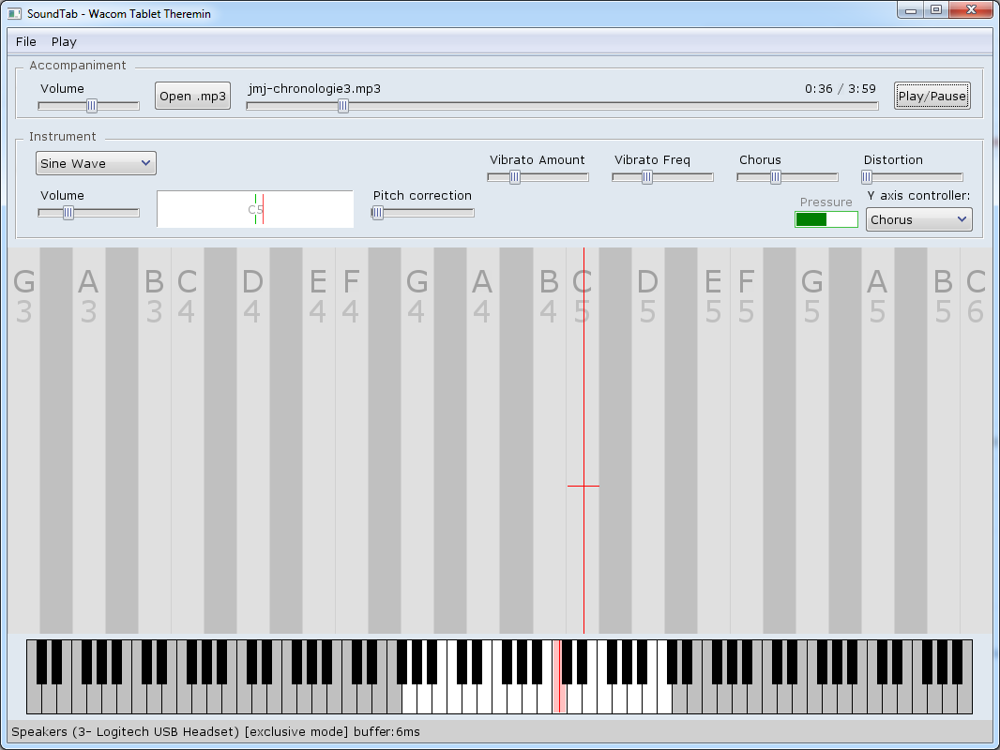

SoundTab Theremin
Wacom tablet Theremin synthesizer.
Play like on Theremin, but instead of moving hand in the air, move pen over wacom tablet. Volume is modulated by pen pressure, instead of left hand movement in Theremin.
For better experience, use Wacom digitizer with pressure detection.
You can play with mouse as well, but w/o volume modulation (no pressure information), and less precise positioning.
Supported platforms
Currently only Windows platform is supported due to used Audio and Wacom Tablet libraries.
Although, it should not be very difficult to port it to Linux / Mac.
Download Binaries
You can download prebuilt binaries from Releases section on GitHUB.
https://github.com/buggins/soundtab/releases
Building Application from Source
You will need some D compiler (e.g. DMD or LDC) and DUB utility.
Clone source code from GitHub using git
clone https://github.com/buggins/soundtab.git
(If you don't have git installed, just download ZIP archive from source code)
Enter soundtab directory.
cd soundtab
Invoke DUB to build and run application.
dub run
You can find built binaries in soundtab/bin folder.
Audio Settings
In Main Menu, select File/Settings item.
Select audio output device, Exclusive/Shared mode, and minimal frame length.
For better responsibility (lower latency), check Exclusive mode.
If you hear glitches while sound playback, choose bigger value of Minimal Frame Length (milliseconds).
Lowest latency is achievable on Win 10.